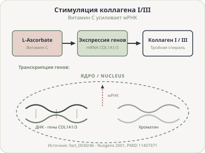
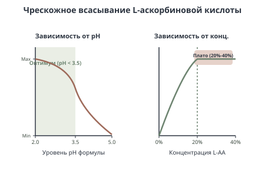
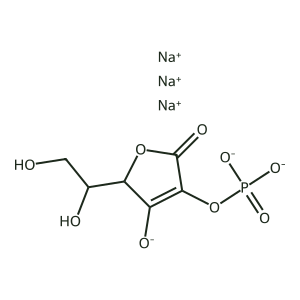

Клиническая эффективность L-аскорбиновой кислоты и её стабильных дериватов
Стимуляция коллагена и фотозащита на клеточном уровне
Влияние топической L-аскорбиновой кислоты на дермальный матрикс

Влияние уровня pH и концентрации на чрескожное проникновение

Стабильный дериват витамина C (SAP) в лечении акне средней тяжести

Особенности влияния уровня pH формулы на чувствительность кожи
Формулы L-аскорбиновой кислоты с низким pH (менее 3.5) могут вызывать локальное покалывание. Дериват аскорбилфосфат натрия (5% SAP) наносится при нейтральном pH и имеет комфортный профиль.
Резюме по клиническому применению витамина C